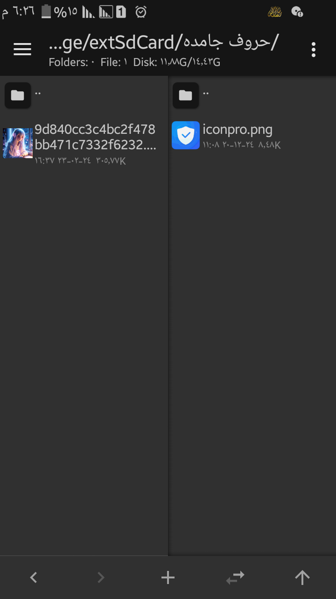
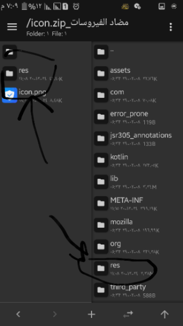
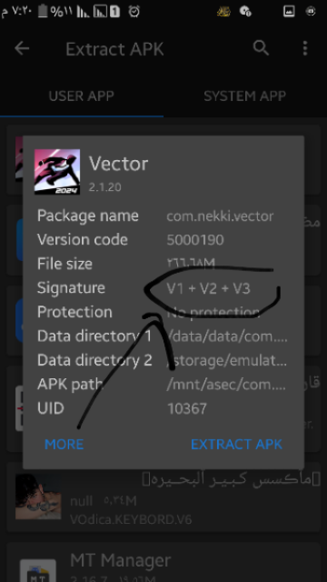

للرجوع
هتعمل كل الخطوات اللي قولتهالك في شرح استخراج صورة البرنامج لحد ما قولتلك هتلاقي ملف بامتدادzip
1-هتضغط على الملف
هتلاقي ملف تاني جواه هتفتحه لحد ما تلاقي صور البرنامج قدامك
2-هتشوف الصورة اللي انت عايز تستبدلها بصورة البرنامج وتكون في الصفة التانية زي مثلا في الصورة اللي تحت 👇

هتعمل اعادة تسمية للصورة الجديدة زي اسم الصورة اللي جوه الملف وبعدين تعمل للصورة الجديدة نقل عن طريق الضغط المستمر عليها والضغط على امر move
تنبيه هام
لو الصورة الاولى مختفتش يبقى اسم الصورة الجديدة غلط
طبعاً في الملف المضغوط ممكن تلاقي اكتر من ملف
كل ملف هتشيل الصورة القديمة وتحط الصورة الجديدة
بعدين هترجع لاول الملف المضغوط
وفي الصفحة التانية في التطبيق هتفتح ملف التطبيق عن طريق الضغط عليه وعلى كلمة view
طبعاً الملف اللي انت دخلتله في الملف المضغوط هتلاقي ملف ليه نفس الاسم في ملف التطبيق زي اللي في الصورة تحت 👇

مش شرط يكون اسم الملف res
بعدين لما تدخل على الملف المشابه في ملف البرنامج هتبحث عن اسم الصورة وكل صورة تغيرها بالصورة اللي موجوده في الملف المضغوط لحد متخلصهم كلهم
بعدين تطلع برا ملف البرنامج وتضغط عليه تاني
لو لقيت الصورة اتغيرت يبقى اللي انت عملته صح
لقيته غير كده يبقى في حاجه انت عملتها غلط
لو اتغير اسم التطبيق تضغط على ملف التطبيق تاني بعدين تختار function
بعدين تضغط على اول زرار او sign apk
بعدين هتضغط على كلمة V1+V2+V3وتحولها للاصدار بتاع التطبيق الاصلي
لو عايز تعرف ازاي تجيب رقم الاصدار اعمل الخطوات الجايه دي
هتخش على التلت شرط اللي فوق خالص على الشمال
بعدين تضغط على كلمه extract apk
بعدين تبحث لحد ما تلاقي اسم التطبيق وتضغط عليه
رقم الاصدار هتلاقيه في الحته اللي انا مشاور عليها في الصورة اللي تحت👇

بعدين تضغط ok
هتلاقي نسخه تانيه اتعملت
هوا ده التطبيق الجديد
هتضغط عليه وتعمل install
وممكن يطلب منك انك تمسح التطبيق الاول وتحمل التطبيق التاني
بس ده الشرح مقدم من
™ŴỖĹƑ ϺÃŜŤẸŘ